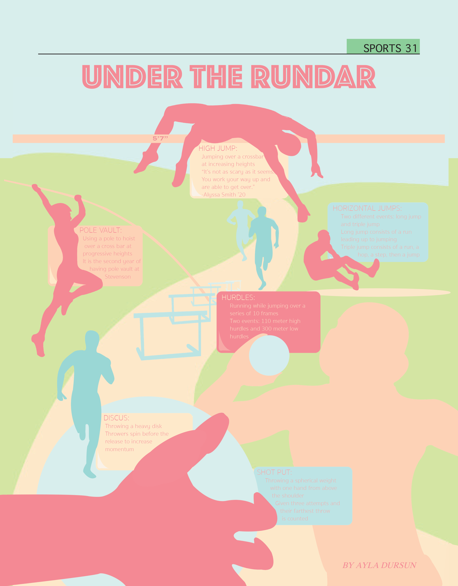

Reflections Of Us Cover
Details
This design was created for the cover of a school newspaper issue focusing on diversity. It received First-Place Honor in the Front Page category of the 2020 Illinois Journalism Educators Association Contest.

Altered Breath Cover
Details
This design was created for the cover of a school newspaper issue focusing on vaping. This design received a Superior Award in Ball State University’s 65th annual Journalism Day newspaper contest.

Under The Rundar Page
Details
This page was created for a school newspaper infographic on the track team.